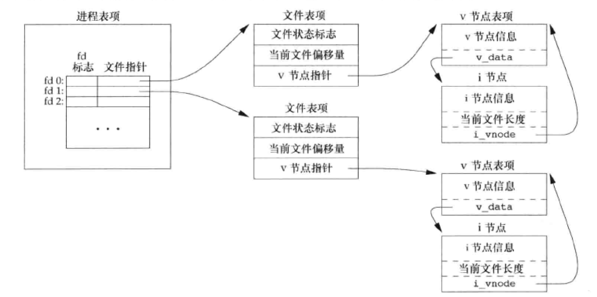
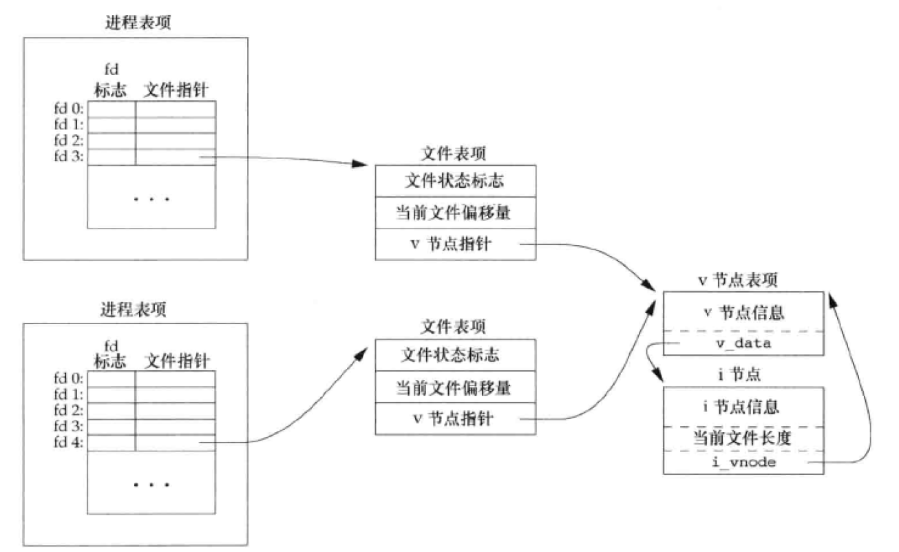

此为第三章的笔记，由于其内容大部分类似于API手册，所以就不直接搬运到笔记上了。
简介
UNIX系统中的大多数文件I/O只需要5个函数：open 、 write 、 lseek 和 close 。
不带缓冲的I/O：每个 write 和 read 都调用内核中的一个系统调用。
文件描述符
非负整数。
对于内核而言，所有打开的文件都通过 文件描述符引用 。打开或创建一个新文件时，内核向进程返回一个文件描述符。
通过 open 或 create 返回文件描述符表示该文件，并将其作为参数传给 read 或 write。
范围在 0 ~ OPEN_MAX-1 之间。
默认文件描述符
0（STDIN_FILENO）标准输入1（STDOUT_FILENO）标准输出2（STDERR_FILENO）标准错误
括号中的符号常量定义在 <unistd.h> 头文件中。
TOCTTOU 错误
time-of-check-to-time-of-use：如果有两个基于文件的函数调用，其中第二个依赖于第一个调用的结果，那么该程序是脆弱的。两个系统并不是原子操作，两个函数调用之间文件可能改变了。
文件打开方式
在 <fcntl.h> 头文件中定义。这里只列出部分重要的，其他见PDFp70
| 代号 |
意义 |
| O_RDONLY |
只读打开(0) |
| O_WRONLY |
只写打开(1) |
| O_RDWR |
读、写打开(2) |
| O_EXEC |
只执行打开 |
| - |
以上只能指定一个 |
| O_APPEND |
追加至文件末尾 |
| O_CREAT |
不存在则创建（配合O_RDWR使用） |
| O_SYNC |
每次write等物理I/O完成（数据和属性） |
| O_DSYNC |
同上（仅数据） |
| O_TRUNC |
存在，且以只写或读写打开，则将其长度截0 |
文件描述符操作
在 <fcntl.h> 头文件中定义。作为 fcntl 函数的第二个参数，这里只列出部分重要的，其他见PDFp85
| 代号 |
意义 |
| F_DUPFD |
复制文件描述符fd。新文件描述符作为函数值返回 |
| F_GETFD |
获取fd |
| F_SETFD |
设置fd，新值为 fcntl 第三个参数 |
| F_GETFL |
获取fd的文件状态标志作为函数值返回 |
| F_SETFL |
设置文件状态标志，新值为 fcntl 第三个参数 |
lseek
无法设置偏移的情况
测试标准输入是否可以设置偏移量。管道、FIFO或网络套接字返回为-1，并将errno设置为 ESPIPE
1
2
3
4
5
6
7
8
9
10
11
12
| #include <stdlib.h>
#include <unistd.h>
#include <stdio.h>
int main(void)
{
if (lseek(STDIN_FILENO, 0, SEEK_CUR) == -1)
printf("cannot seek\n");
else
printf("seek ok\n");
exit(0);
}
|
1
2
3
4
5
| > ./a.out < /etc/passwd
seek ok
> cat /etc/passwd | ./a.out
cannot seek
|
创建具有空洞的文件
文件的偏移量可以大于文件的当前长度。位于文件中但没有写过的字节都读为0。
文件中的空洞并不要求在磁盘上占用存储区。从 原文件尾部 和 新开始写位置 之间的部分不需要分配磁盘块。
1
2
3
4
5
6
7
8
9
10
11
12
13
14
15
16
17
18
19
20
21
22
23
24
25
26
| #include <apue.h>
#include <fcntl.h>
#include <unistd.h>
#include <sys/stat.h>
char buf1[] = "abcdefghij";
char buf2[] = "ABCDEFGHIJ";
int main(void)
{
int fd;
if ((fd = creat("hole.txt", S_IRUSR | S_IWUSR | S_IRGRP | S_IWGRP)) < 0)
err_sys("creat error");
if (write(fd, buf1, 10) != 10)
err_sys("buf1 write error");
if (lseek(fd, 16384, SEEK_SET) == -1)
err_sys("lseek error");
if (write(fd, buf2, 10) != 10)
err_sys("buf2 write error");
exit(0);
}
|
使用 od 查看文件中实际的内容
输出如下
1
2
3
4
5
| 0000000 a b c d e f g h i j \0 \0 \0 \0 \0 \0
0000020 \0 \0 \0 \0 \0 \0 \0 \0 \0 \0 \0 \0 \0 \0 \0 \0
*
0040000 A B C D E F G H I J
0040012
|
fcntl
根据指令执行文件控制操作
下列程序指定文件描述符，并根据该描述符打印其所选择的文件标志说明
1
2
3
4
5
6
7
8
9
10
11
12
13
14
15
16
17
18
19
20
21
22
23
24
25
26
27
28
29
30
31
32
33
34
35
36
37
38
39
40
41
42
| #include <apue.h>
#include <fcntl.h>
int main(int argc, char *argv[])
{
int val;
if (argc != 2)
err_quit("usage: a.out <descriptor#>");
if ((val = fcntl(atoi(argv[1]), F_GETFL, 0)) < 0)
err_sys("fcntl error for fd %d", atoi(argv[1]));
switch (val & O_ACCMODE) {
case O_RDONLY:
printf("read only");
break;
case O_WRONLY:
printf("write only");
break;
case O_RDWR:
printf("read write");
break;
default:
err_dump("unknown access mode");
}
if (val & O_APPEND)
printf(", append");
if (val & O_NONBLOCK)
printf(", nonblocking");
if (val & O_SYNC)
printf(", synchronous writes");
putchar('\n');
exit(0);
}
|
输出如下
1
2
3
4
5
6
7
8
9
10
11
12
| > ./a.out 0 < /dev/tty
read only
> ./a.out 1 > temp.foo
> cat temp.foo
write only
> ./a.out 2 2>>temp.foo
write only, append
> ./a.out 5 5<>temp.foo
read write
|
增删文件描述符
新增
逻辑或
1
2
3
4
5
6
7
8
9
10
11
12
13
| #include <apue.h>
#include <fcntl.h>
void set_fl(int fd, int flags) {
int val;
if ((val = fcntl(fd, F_GETFL, 0) < 0)
err_sys("fcntl F_GETFL error");
val |= flags;
if (fcntl(fd, F_SETFL, val) < 0)
err_sys("fcntl F_SETFL error");
}
|
删除
反码的逻辑与
1
2
3
4
5
6
7
8
9
10
11
12
13
| #include <apue.h>
#include <fcntl.h>
void set_fl(int fd, int flags) {
int val;
if ((val = fcntl(fd, F_GETFL, 0) < 0)
err_sys("fcntl F_GETFL error");
val &= ~flags;
if (fcntl(fd, F_SETFL, val) < 0)
err_sys("fcntl F_SETFL error");
}
|
/dev/fd
Linux下，/dev/fd 被链接至 /proc/self/fd
本章涉及到的所有系统调用
| 功能 |
名称 |
PDF页面 |
| 打开文件 |
open、openat、creat |
70 |
| 关闭文件 |
close |
73 |
| 偏移内容 |
lseek |
73 |
| 读数据 |
read |
77 |
| 写数据 |
write |
77 |
| 复制文件描述符 |
dup、dup2 |
83 |
| 改变已打开文件属性 |
fcntl |
85 |
文件共享
打开文件的内核数据结构

多进程打开同一文件
